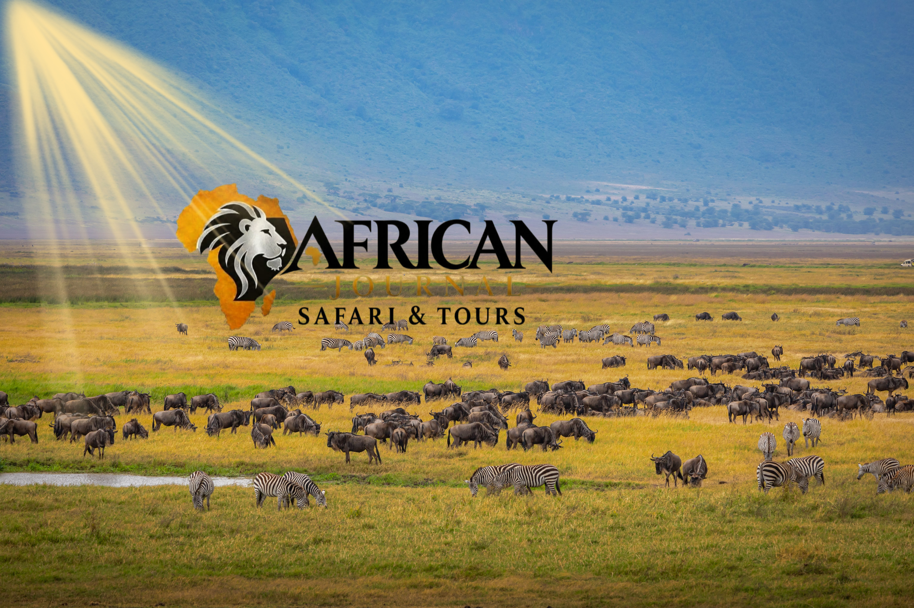

Start with you
Dates, interests, pace and priorities make a better starting point than a one-size-fits-all itinerary.
A story-led travel brand for remarkable journeys, meaningful discovery and personal experiences.
Read our approachA safari can be more than a route between famous places. It can be a way to notice landscapes, wildlife, cultures and the details that make a journey personal.
African Journal Safari Tours brings together a story-led editorial voice and thoughtful trip planning. The aim is to help travellers explore, discover and experience with clear information at every step.
The launch focus is Tanzania. From the northern safari circuit and mountain landscapes to culture and the coast, the country provides a focused starting point for the journal.

Our first chapter starts in Tanzania.
A good first plan begins by listening. We want to understand your interests and share clear details before anything is confirmed.
Dates, interests, pace and priorities make a better starting point than a one-size-fits-all itinerary.
Journey details and quotes should be discussed before a plan is confirmed.
Look beyond the familiar highlights to the landscapes, cultures and everyday details of a place.
The launch focus is Tanzania. New destinations should be added only as routes and operations are confirmed.
Tell us what you would like to discover in Tanzania. We’ll start with a conversation and share a quote once your trip details are understood.